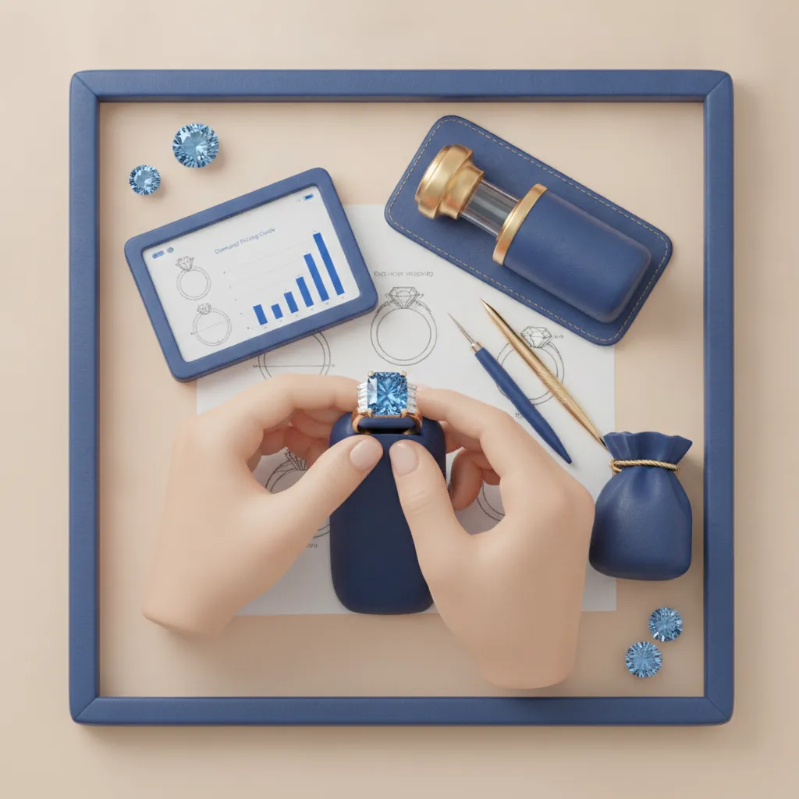
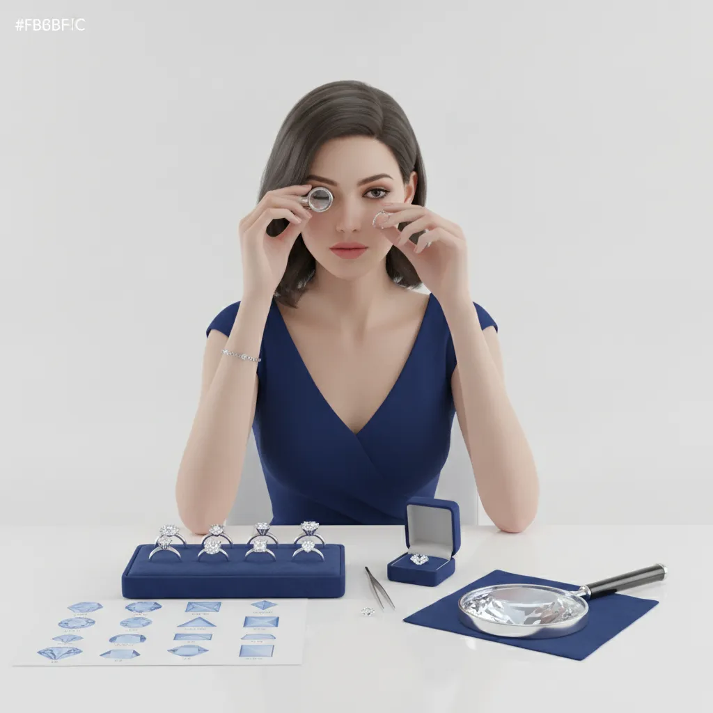

טבעת יהלום היא תכשיט המשלב אבן יהלום אחת או יותר בתוך טבעת עשויה מתכת יקרה כגון זהב, זהב לבן או פלטינה. היא נחשבת לאחד הסמלים הרומנטיים המובהקים ביותר, ומשמשת בעיקר כטבעת אירוסין, אך גם כתכשיט יומיומי לאירועים מיוחדים. בחירת הטבעת הנכונה היא תהליך שדורש ידע, הבנה של פרמטרים מקצועיים, ולא מעט סבלנות. מאמר זה ילווה אתכם בכל שלב של ההחלטה — מהבנת איכות היהלום ועד לאמדן תקציב ריאלי.
מה הם ה-4Cs ולמה הם קובעים הכל?
ה-4Cs הם ארבעת המאפיינים המקצועיים שקובעים את איכות היהלום ומחירו: Cut (חיתוך), Color (צבע), Clarity (בהירות) ו-Carat (משקל). כל אחד מהם משפיע באופן ישיר על המראה הסופי של הטבעת ועל הערך שלה. הבנת הפרמטרים האלה תאפשר לכם לקבל החלטה מושכלת ולא להסתמך בלעדית על המחיר.
- Cut (חיתוך) — הגורם החשוב ביותר לנצנוץ של היהלום. חיתוך מדויק מחזיר את האור בצורה המיטבית. דרגת Excellent או Very Good היא הסטנדרט המומלץ.
- Color (צבע) — הסולם נע מ-D (חסר צבע לחלוטין) ועד Z (גוון צהוב בולט). ליהלום בטבעת אירוסין, דרגות G עד I מציעות מראה לבן מצוין במחיר סביר יותר.
- Clarity (בהירות) — מתאר את מספר ה"כלולות" (פגמים פנימיים) ביהלום. דרגת VS2 עד SI1 היא נקודת האיזון האידיאלית — פגמים בלתי נראים לעין בלתי מזוינת.
- Carat (קרט) — מדד משקל היהלום. קרט אחד שווה 0.2 גרם. חשוב לדעת שמחיר לקרט עולה באופן לא לינארי — יהלום של 1 קרט יקר משמעותית יותר משניים של 0.5 קרט.
בפרקטיקה של בחירת תכשיטים, ממליצים לרוב להשקיע את מרב התקציב באיכות החיתוך, ולהתפשר מעט על צבע ובהירות — ההשפעה הוויזואלית של חיתוך מעולה גדולה בהרבה מדרגת צבע גבוהה יותר.
לאימות איכות היהלום, כדאי לדרוש תעודת GIA (Gemological Institute of America) או IGI — אלו הגופים הבינלאומיים המוכרים לסיווג יהלומים, ותעודתם מהווה ערובה לאמינות הנתונים. לפרטים נוספים על תכשיטים מקצועיים בעיצוב אישי, ניתן לבקר בנמטייב תכשיטים.
איך בוחרים את הגודל, המידה והמתכת הנכונה?

מעבר לאיכות היהלום עצמו, שלושה פרמטרים נוספים קובעים את מראה הטבעת הסופי: גודל אבן היהלום ביחס לאצבע, מידת הטבעת, וסוג המתכת.
גודל היהלום ביחס לאצבע
אבן של 0.5 קרט נראית שונה לגמרי על אצבע דקה לעומת אצבע רחבה. אצבעות דקות (מידה 5-6) מתאימות לאבנים של 0.3 עד 0.7 קרט, ואצבעות רחבות יותר (מידה 7-8) ייהנו מאבנים מ-0.7 קרט ומעלה. הכלל הוא שהאבן לא צריכה "להיבלע" בתוך האצבע, אך גם לא להיראות מוגזמת.
מידת הטבעת
מידות טבעות בישראל מתבססות על הקוטר הפנימי במילימטרים, ולעיתים על מידות אירופאיות (סולם 44-68). הדרך הטובה ביותר לבדוק מידה היא בסטודיו תכשיטים עם מד-טבעות מקצועי. כדאי לדעת שאצבעות נוטות להתנפח מעט בקיץ ובשעות הערב, ולכן כדאי למדוד בתנאים שונים.
סוג המתכת
הבחירה בין סוגי המתכת משפיעה על מראה הטבעת, עמידותה ומחירה:
- זהב צהוב 14K/18K — הקלאסי הנצחי. 14K עמיד יותר ומתאים לשימוש יומיומי; 18K עשיר יותר בצבע אך רך מעט יותר.
- זהב לבן — פופולרי מאוד בשנים האחרונות. מצופה ברודיום לגוון לבן-כסוף. דורש ציפוי מחדש כל מספר שנים.
- זהב ורוד (Rose Gold) — גוון חם ורומנטי שצבר פופולריות רבה. שילוב של זהב ונחושת.
- פלטינה — המתכת היוקרתית ביותר. לבנה טבעית, עמידה מאוד לשריטות, ומתאימה לרגישויות עור. יקרה משמעותית מזהב.
יהלומי מעבדה לעומת יהלומים טבעיים — מה ההבדל האמיתי?
יהלומי מעבדה הם יהלומים שנוצרו בתנאים מבוקרים תוך שימוש בתהליכים המחקים את היווצרות יהלומים טבעיים בטבע. הם זהים כימית, פיזית ואופטית ליהלומים טבעיים — ומוסמכים באותן תעודות GIA ו-IGI. ההבדל העיקרי הוא במקור ובמחיר.
יהלומי מעבדה מציעים חיסכון משמעותי בהשוואה ליהלומים טבעיים באיכות זהה. זהו יתרון כלכלי ברור, במיוחד עבור זוגות המעוניינים באבן גדולה יותר בתוך תקציב קבוע. בנוסף, יהלומי מעבדה נחשבים לאפשרות בת-קיימא יותר מבחינה סביבתית. המכון הגמולוגי GIA מסווג ומאשר גם יהלומי מעבדה, כך שניתן לקבל תעודת אמינות לשני הסוגים.
מנגד, יהלומים טבעיים שומרים על ערכם לאורך זמן ונתפסים כבעלי משמעות רומנטית מיוחדת. עבור אנשים שרואים ביהלום גם השקעה לטווח ארוך, יהלום טבעי עדיין מהווה הבחירה המועדפת.
בסטודיו נמטייב תכשיטים בבורסה, רמת גן, עובדים עם שני סוגי היהלומים ומתאימים את הבחירה לצרכים ולתקציב של כל לקוח.
טיפים מקצועיים לבחירת טבעת אירוסין

בחירת טבעת אירוסין היא אחת ההחלטות הרגשיות והפיננסיות החשובות ביותר. להלן צ'ק-ליסט מקצועי שיסייע לכם לא לפספס דבר:
צ'ק-ליסט לפני הקנייה
- קבעו תקציב ברור מראש — כולל עלות הטבעת, הכיתוב ושינויי מידה עתידיים
- בדקו שהיהלום מגיע עם תעודת GIA, IGI או HRD מקורית
- בקשו לראות את היהלום תחת תאורות שונות — לא רק אור ספוט חנות
- ודאו שמידת הטבעת נמדדה נכון — ושניתן לשנות מידה לאחר מכן
- שאלו על מדיניות ביטוח, אחריות ותיקונים עתידיים
- השוו מחירים בין לפחות שלושה מקומות שונים לפני ההחלטה הסופית
תהליך הקנייה ב-4 שלבים:
שלב 1: הגדרת תקציב ועדיפויות
החליטו מה חשוב לכם יותר — גודל האבן, איכותה, או סוג המתכת. לא ניתן לקבל את הכל בתקציב מוגבל, ולכן סדרי העדיפויות קובעים.
שלב 2: פגישת ייעוץ עם צורף מוסמך
פגישה עם מומחה מאפשרת לראות את האבנים מקרוב, להשוות בין אפשרויות ולקבל הסבר מקצועי על ההבדלים. אל תקנו אונליין ללא ראיית הטבעת בפועל.
שלב 3: בדיקת תעודה ואימות
בקשו לבדוק את תעודת היהלום ולאמת את מספר הסיווג ישירות מול אתר GIA. תעודה אמיתית מגנה עליכם מפני הונאה.
שלב 4: עיצוב אישי ומסירה
אם אתם מעוניינים בטבעת ייחודית, שקלו עיצוב מותאם אישית. הוספת כיתוב ובחירת עיצוב ייחודי לסגר היהלום — כל אלה הופכים את הטבעת לבלתי נשכחת.
טעויות נפוצות בקניית טבעת יהלום ואיך להימנע מהן
לאחר שנים של ניסיון בתחום, ניתן לזהות דפוסים חוזרים של טעויות שרוכשים עושים בתהליך בחירת טבעת יהלום. ההיכרות עם הטעויות האלה תחסוך לכם כסף ואכזבות.
התמקדות בקרטאז' על חשבון איכות החיתוך
רבים מהרוכשים שואפים לאבן גדולה ככל האפשר, ומוותרים על איכות החיתוך. זו הטעות הנפוצה ביותר. יהלום של 0.8 קרט עם חיתוך מעולה ינצנץ הרבה יותר מיהלום של 1 קרט עם חיתוך בינוני. הנצנוץ הוא מה שמושך את העין — לא הגודל בלבד.
קניית טבעת יהלום ללא תעודה מוכרת
רכישה ללא תעודת GIA או IGI היא הימור מיותר. ללא תעודה, אין לכם דרך לאמת את הנתונים שהמוכר מציג. תעודה מוסמכת היא לא מותרות — היא הגנה בסיסית על ההשקעה שלכם.
אי-בדיקת מדיניות שינוי מידה
טבעות יהלום עם עיצובים מסוימים קשות לשינוי מידה לאחר מכן. לפני הקנייה, ודאו שניתן לשנות את הגודל בעתיד, ומה עלות השינוי. זה חשוב במיוחד כשמציעים הצעת נישואין עם טבעת שמידתה אינה ידועה.
התעלמות מסגנון האדם שיקבל את הטבעת
טבעת יהלום שתיענד כל יום חייבת להתאים לאורח החיים של מי שתרכוש אותה. אדם פעיל שעובד ידנית יזדקק לעיצוב נמוך ועמיד יותר מאדם שעובד במשרד. שימו לב לתכשיטים שהאדם כבר עונד כדי להבין את סגנונו.
שאלות נפוצות
כמה עולה טבעת יהלום ממוצעת בישראל?
מה ההבדל בין זהב 14K לזהב 18K בטבעת אירוסין?
איך יודעים מה מידת הטבעת של בן/בת הזוג?
האם יהלום מעבדה נחשב "אמיתי"?
מתי כדאי להזמין טבעת בעיצוב מותאם אישית?
סיכום ומסקנות
בחירת טבעת יהלום היא אחת ההחלטות המשמעותיות שתקבלו — כלכלית ורגשית כאחד. המפתח להחלטה נכונה הוא ידע: הבנת ה-4Cs, הכרת ההבדל בין סוגי המתכות, ומודעות לאפשרויות כמו יהלומי מעבדה שמציעות ערך מצוין. אל תתנו ללחץ או לרצון להרשים לגבור על שיקולים מעשיים.
הנקודות המרכזיות לזכור: תמיד דרשו תעודת GIA או IGI; השקיעו בחיתוך לפני גודל; בדקו מדיניות שינוי מידה; והכי חשוב — בחרו טבעת שמתאימה לסגנון ולאורח החיים של מי שתרכוש אותה. טבעת יהלום שנבחרה נכון תהיה מושא גאווה לשנים רבות.